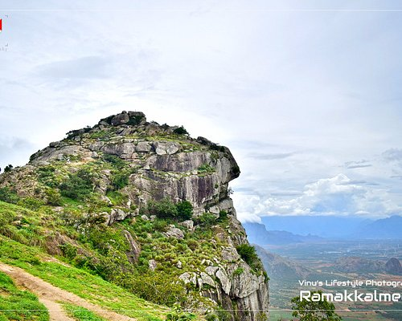

TOP ATTRACTIONS IN IDUKKI
IDUKKI DAM

The Idukki Dam is a double curvature Arch dam constructed across the Periyar River in a narrow gorge between two granite hills locally known as Kuravan and Kurathi in Mariyapuram village in Idukki District in Kerala, India. At 168.91 metres (554.2 ft),[1] it is one of the highest arch dams in Asia. It is constructed and owned by the Kerala State Electricity Board. It supports a 780 MW hydroelectric power station in Moolamattom, which started generating power on 4 October 1975.[2] The dam type is a concrete, double curvature parabolic, thin arc dam.[3]
RAMAKKALMEDU
Located in Idukki district of Kerala, Ramakkalmedu is about 40 km from Thekkady, which is one of the popular wildlife destinations in Kerala. The captivating hills of Ramakkalmedu in the Western Ghats, which is about 16 km from Nedumkandam.Cool, green hills and the fresh mountain air make Ramakkalmedu an enchanting retreat. The place gets its name from the impressions of the feet found on the rock surface here, which is believed to be of Rama, the incarnation of Lord Vishnu, as told in the Indian epic Ramayana.
CHATHURANGAPARA VIEW POINT

An ancient stone with the image of a hero sitting atop an elephant has been found at Chathurangapara near Kerala-Tamil Nadu border in the district. Researchers of the Archeological and Historical Conservation forum in Nedumkandam who discovered the “hero stone” said that such a discovery has been made for the first time in south India.The stone depicts a hero with a raised sword in his right hand. Another person and animal form is seen nearby and it was obscure,